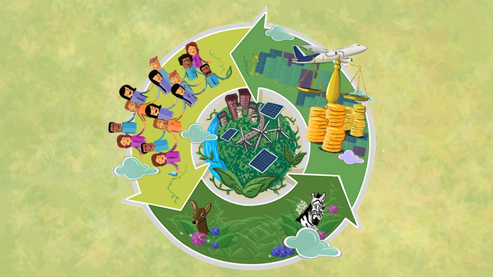
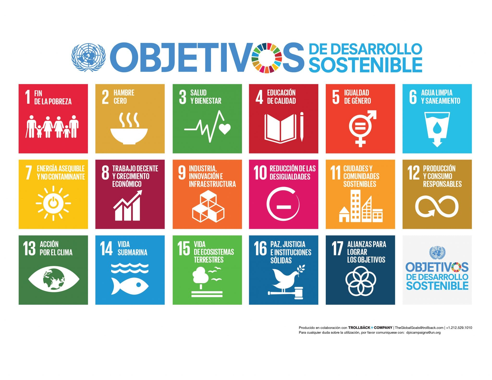

¿Por qué es importante este tema?
El desarrollo económico y la protección ambiental suelen presentarse como objetivos opuestos. Sin embargo, ambos son fundamentales para garantizar el bienestar de las generaciones actuales y futuras. La sostenibilidad busca precisamente encontrar el equilibrio entre el crecimiento económico, la inclusión social y la conservación del medio ambiente.
El dilema del desarrollo económico
En la actualidad, el debate entre el medio ambiente y el desarrollo económico es un tema crucial que afecta a nivel global. Por un lado, el desarrollo económico es esencial para mejorar la calidad de vida, generar empleo y reducir la pobreza. Por otro lado, la protección del medio ambiente es vital para garantizar la sostenibilidad a largo plazo y preservar los recursos naturales para las futuras generaciones.

Impactos ambientales del desarrollo económico
El desarrollo económico puede tener impactos negativos significativos en el medio ambiente. La explotación de recursos naturales, la deforestación, la contaminación del aire y del agua, así como la generación de residuos, son algunos ejemplos de cómo el crecimiento económico puede afectar negativamente al planeta.

Soluciones para un desarrollo sostenible
Actualmente existen diversas estrategias para reducir los impactos ambientales del desarrollo económico. Entre ellas destacan el uso de energías renovables, la economía circular, la gestión adecuada de residuos, la eficiencia energética y la conservación de ecosistemas estratégicos.

Principales desafíos ambientales
El crecimiento económico ha permitido avances significativos en la calidad de vida de millones de personas. Sin embargo, también ha generado desafíos ambientales que requieren atención inmediata.
- Cambio climático.
- Pérdida de biodiversidad.
- Deforestación.
- Contaminación del agua y del aire.
- Generación excesiva de residuos.
Objetivos del Desarrollo Sostenible (ODS)
Los Objetivos de Desarrollo Sostenible establecidos por las Naciones Unidas buscan promover un crecimiento económico responsable y la protección del medio ambiente.
- ODS 6: Agua limpia y saneamiento.
- ODS 7: Energía asequible y no contaminante.
- ODS 11: Ciudades y comunidades sostenibles.
- ODS 12: Producción y consumo responsables.
- ODS 13: Acción por el clima.
- ODS 15: Vida de ecosistemas terrestres.
Beneficios de la sostenibilidad
La adopción de prácticas sostenibles genera beneficios tanto para las empresas como para la sociedad.
- Reducción de costos operativos.
- Mejor reputación corporativa.
- Uso eficiente de recursos naturales.
- Disminución de emisiones contaminantes.
- Protección de ecosistemas.
- Mejora de la calidad de vida.
¿Qué puedes hacer tú?
Cada persona puede contribuir al cuidado del medio ambiente mediante acciones sencillas que generan un impacto positivo cuando se realizan de manera constante.
- Reducir el consumo de plásticos.
- Separar residuos para reciclaje.
- Ahorrar agua y energía.
- Utilizar transporte sustentable.
- Participar en actividades de reforestación.
- Promover la educación ambiental.
Galería Ambiental
Imágenes que reflejan la relación entre la actividad humana, el desarrollo económico y la conservación de los recursos naturales.